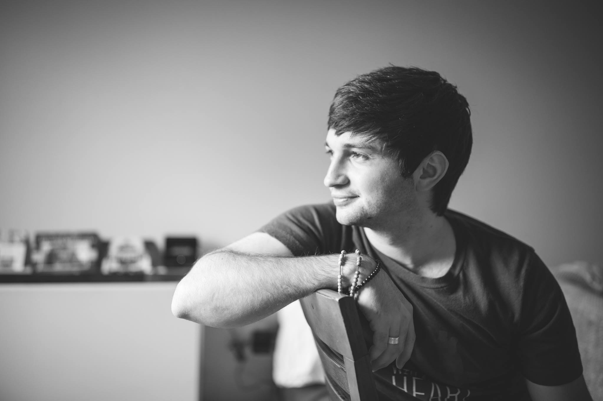

I am a Ph.D. candidate in the department of Electrical Engineering and Computer Science at the University of Michigan under the advisory of Jeff Fessler, Ph.D. Currently, my primary research includes:
- Data-driven and hand-crafted image modeling
- Optimization theory for large-scale problems
- Deep Learning for Image Reconstruction
I am particularly interested in applications to
computational photography and have worked on
compressive light-field capture and reconstruction, multi-frame image de-aliasing and super-resolution, and compressive MR imaging.
Outside of my imaging algorithms research, I also enjoy working on imaging hardware, including circuit design and embedded systems for cameras. I enjoy doing holography (a research topic of mine during my undergrad at BYU) and microscopy and hope to get first hand experience with other imaging methods.
Feel free to contact me via any of the icons in the corner or at cameronjblocker@gmail.com, or check out my resume here.
# Publications
- C. J. Blocker, I. Y. Chun, J. A. Fessler,
“Low-Rank plus Sparse Tensor Models for Light-field Reconstruction from Focal Stack Data,”
in IEEE Image, Video, and Multidimensional Signal Processing (IVMSP) Workshop, 2018
- S. Ravishankar, A. Lahiri, C. Blocker, and J. A. Fessler,
“Deep Dictionary Transform Learning for Image Reconstruction,”
in IEEE International Symposium on Biomedical Imaging (ISBI), 2018